Plot Types¶
MPP can generate 15 types of plots, all accessible through both the CLI (-p <plot>) and
the Python API (mpp.plot.<method>(out)).
Most examples use the HP35 villin headpiece dataset (35 residues, 14 macrostates,
T none lumping unless noted otherwise) with a reduced test dataset. The
Chapman-Kolmogorov test example uses the full HP35 dataset (12 macrostates). The
RMSD and Delta RMSD examples use the PDZ3 dataset (KL none, 7 macrostates), which
provides topology and trajectory files required for those plots.
Dendrogram¶
What it shows: The complete lumping tree. The y-axis is the metastability \(T_{ii}\) (self-transition probability) of the state being merged at each step. Branch colors encode the mean fraction of native contacts \(q\) of the merged cluster. The bottom panel shows the final macrostate assignment as a color-coded bar for each microstate, with macrostate labels. A good lumping produces clearly separated color blocks.
CLI:
API:
Example (HP35, T none, 14 macrostates):
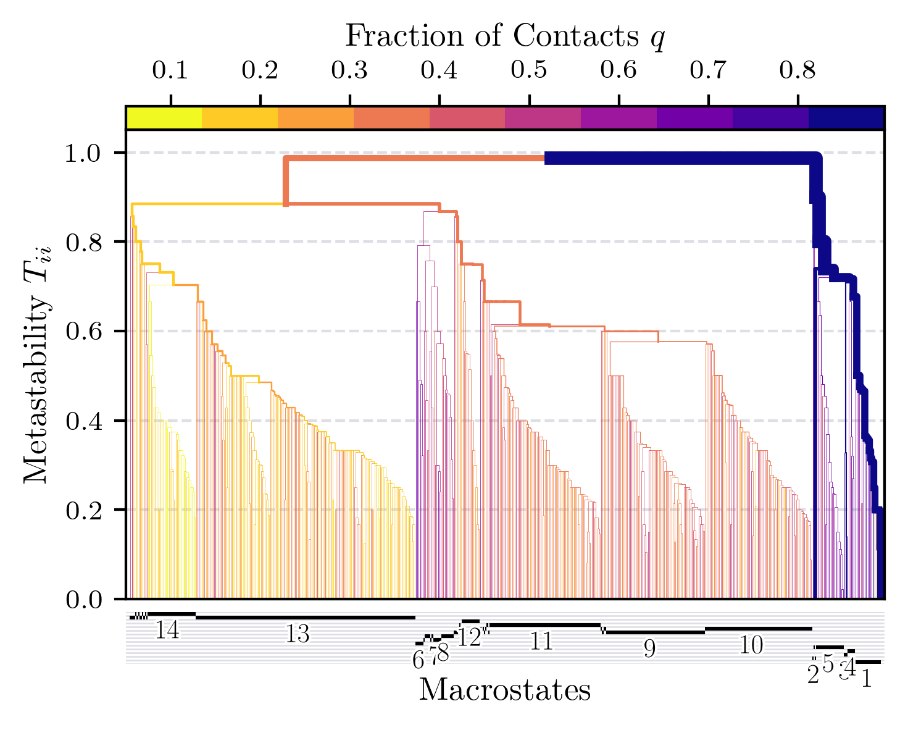
Implied Timescales¶
What it shows: Implied timescales (ITS) of the macrostate model (solid lines) as a function of lag time on a log–log scale. Each color corresponds to one slowness-ranked timescale. A shaded region marks timescales below the analysis lag time. Timescales that are flat with respect to lag time support the Markov assumption.
The reference lines (dashed or dotted) depend on the use_ref option:
use_ref=False(default for theT nonereference lumping): the dashed lines show the implied timescales of the microstate trajectory directly. This is the standard way to assess how well the lumping preserves the slow dynamics of the underlying MD model.use_ref=True(useful for alternative lumpings such asKL none): the dotted lines show the implied timescales of theT nonemacrostate model. This allows a direct comparison between the alternative lumping and the reference lumping.
CLI:
API:
mpp.calc_timescales(ntimescales=3)
# use_ref=False: reference lines = microstate ITS (default for T/none)
mpp.plot.implied_timescales("timescales.pdf", use_ref=False)
# use_ref=True: reference lines = T/none macrostate ITS (for alternative lumpings)
mpp.plot.implied_timescales("timescales.pdf", use_ref=True)
Example — T none with microstate ITS as reference (use_ref=False):
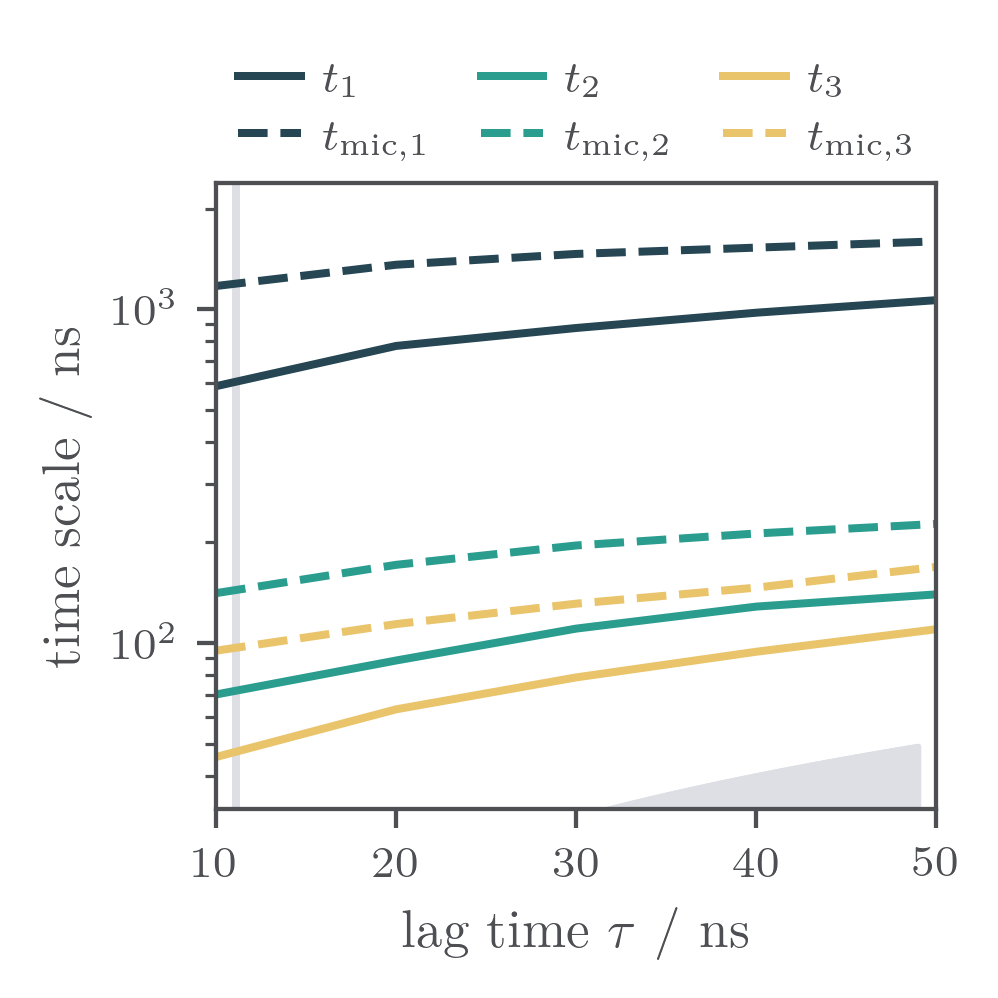
Example — KL none with T none macrostate ITS as reference (use_ref=True):
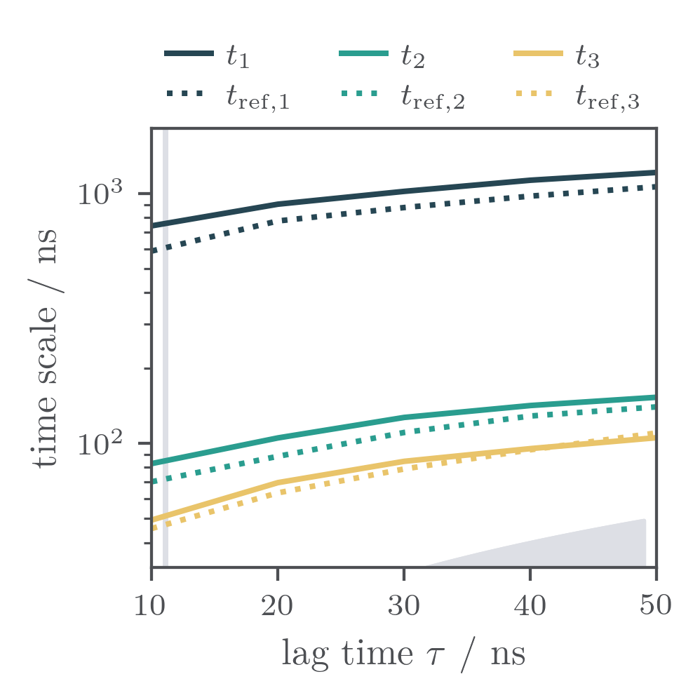
Sankey Diagram¶
What it shows: Microstate flow between the macrostates of the current lumping
(left side) and the reference T none lumping (right side). Each horizontal band
represents one macrostate; its thickness is proportional to the number of microstates
it contains. Crossing flows reveal which macrostates split or merge relative to the
reference. Numbers label macrostate indices.
CLI:
API:
Example (HP35, KL none vs T none reference, 14 vs 14 macrostates):
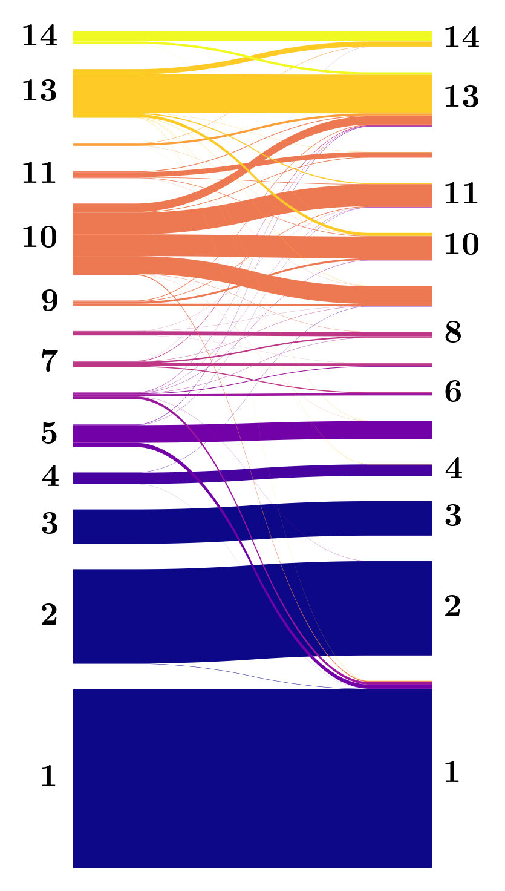
Contact Representation¶
What it shows: Per-macrostate distributions of contact distances grouped by contact cluster. Each subplot corresponds to one macrostate (labeled with macrostate index and population percentage). Within each panel the x-axis enumerates contact clusters, the y-axis shows distances in nm. The dark line is the median; the dark band is the interquartile range (IQR); the light band extends to \(Q_{1/3} \pm 1.5\,\text{IQR}\). Compact macrostates with small IQR at low distances are well-folded conformations.
Requires: cluster_file key in YAML config (contact index file).
CLI:
API:
Example (HP35, T none, 14 macrostates):
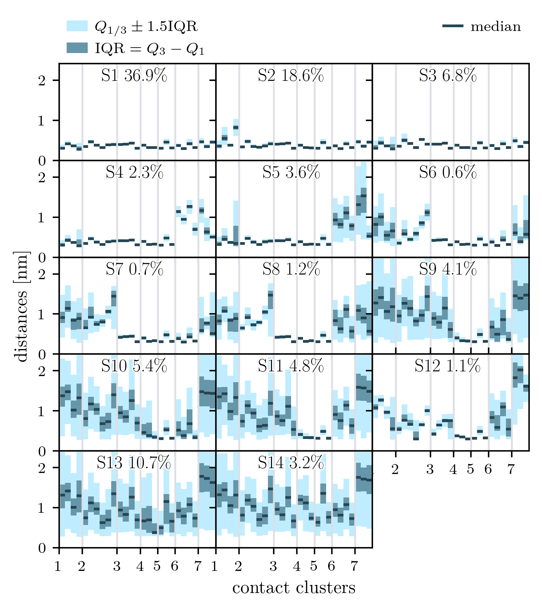
Macrostate Trajectory¶
What it shows: The macrostate trajectory as a color-coded time series. Each tick mark represents one frame, colored by macrostate index (colorbar on the right). The trajectory is split into equal-length rows to make long simulations readable. Dense horizontal bands of the same color indicate persistent, metastable macrostates; rapid color alternation indicates fast transitions.
CLI:
API:
Example (HP35, T none, 14 macrostates, ~300 µs):
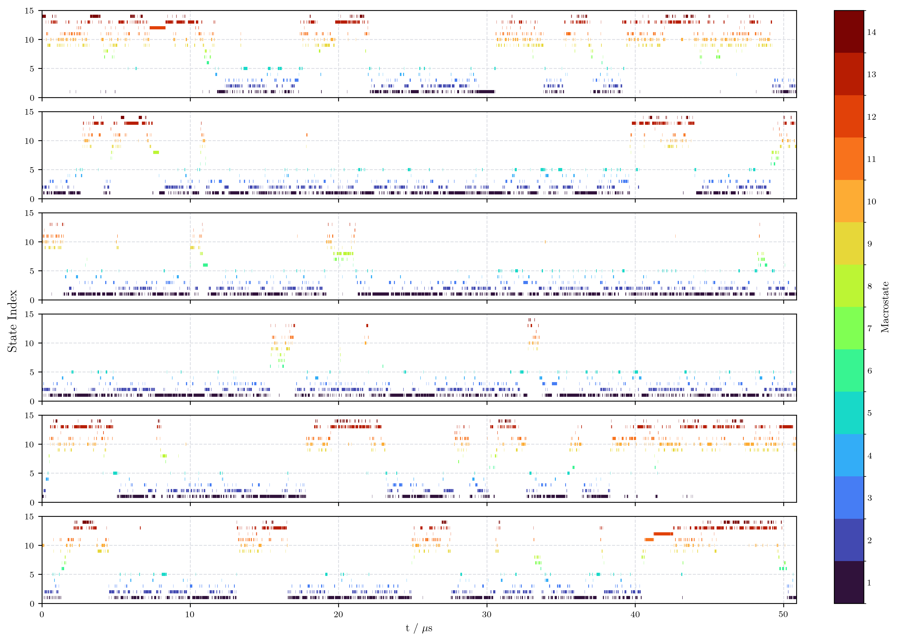
Chapman-Kolmogorov Test¶
What it shows: Chapman-Kolmogorov (CK) test for each macrostate. Each subplot shows the self-transition probability \(P_{i \to i}(t)\) as a function of time. The dashed curve is estimated directly from MD data at each time point; the solid curve is obtained by propagating the macrostate transition matrix raised to successive powers. Close agreement between the two curves supports the Markov property of the lumping. Discrepancies at short times indicate residual non-Markovian behavior.
CLI:
API:
Example (HP35, T none, 12 macrostates):
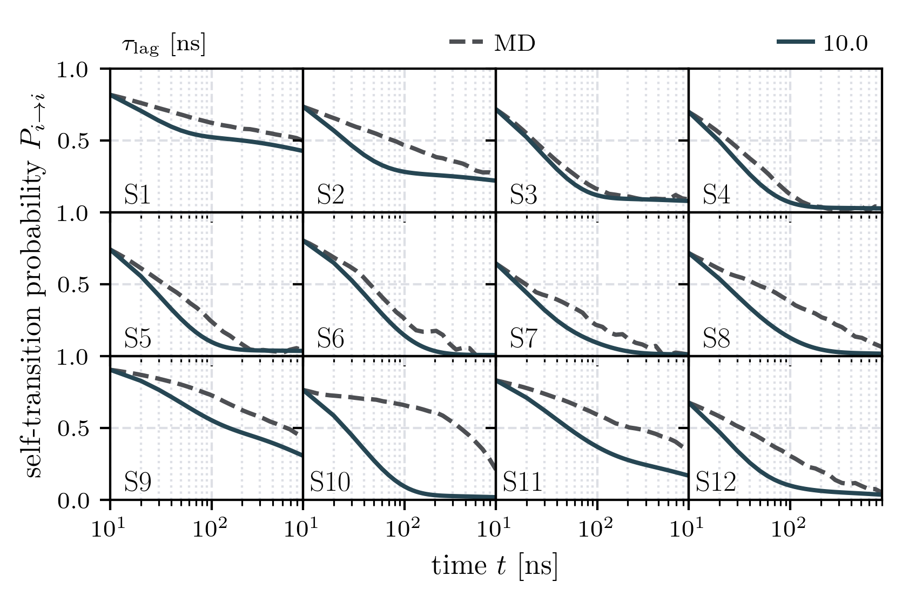
RMSD¶
What it shows: Per-residue C\(\alpha\) RMSD of each macrostate relative to its own mean structure, plotted on a log scale. Each row corresponds to one macrostate. The left panel shows RMSD variance per residue (dark area); the right panels show the macrostate population and the sum of RMSD across all residues as bar charts. Compact, well-defined macrostates show uniformly low RMSD across all residues.
Requires: Topology (.pdb) and trajectory (.xtc) files set on the Lumping
object.
CLI:
API:
mpp.topology_file = "structure.pdb"
mpp.xtc_trajectory_file = "trajectory.xtc"
mpp.plot.rmsd("rmsd.pdf")
Example (PDZ3, KL none, 7 macrostates):
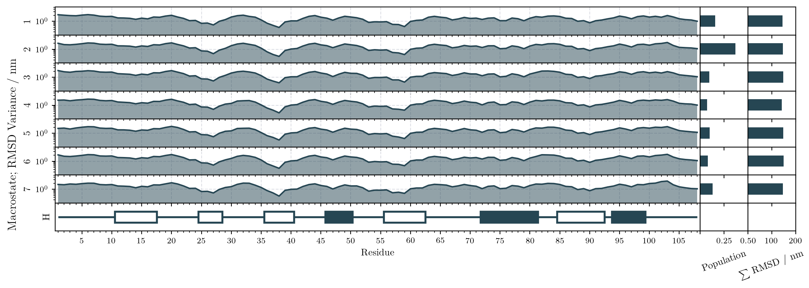
Delta RMSD¶
What it shows: Per-residue C\(\alpha\) RMSD of each macrostate relative to the mean structure of macrostate 1 (instead of each state's own mean). Macrostate 1 therefore appears flat near zero; other macrostates show deviations at residues that differ structurally from macrostate 1. Useful for identifying which parts of the chain drive the conformational differences between macrostates.
Requires: Same as RMSD above.
CLI:
API:
Example (PDZ3, KL none, 7 macrostates):
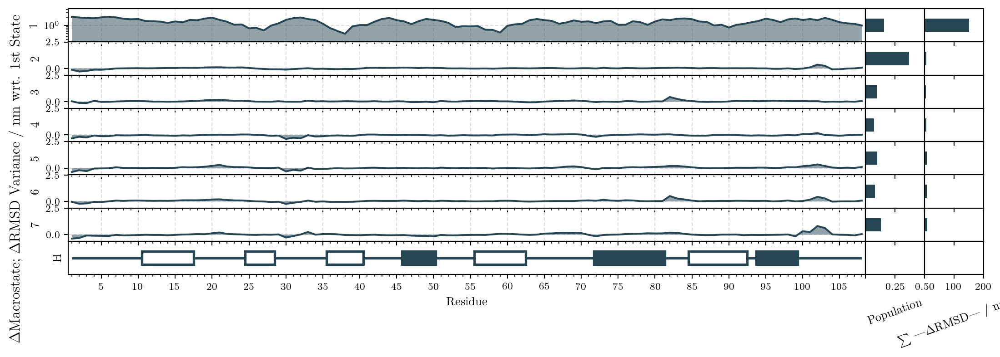
State Network¶
What it shows: A graph of macrostates as labeled nodes, with edges connecting pairs of macrostates that exchange probability. Edge width is proportional to the transition probability. Node size reflects macrostate population and node color follows the same color scheme used in the dendrogram and trajectory plots. Thick edges between large nodes reveal the main kinetic pathways.
CLI:
API:
Example (HP35, T none, 14 macrostates):
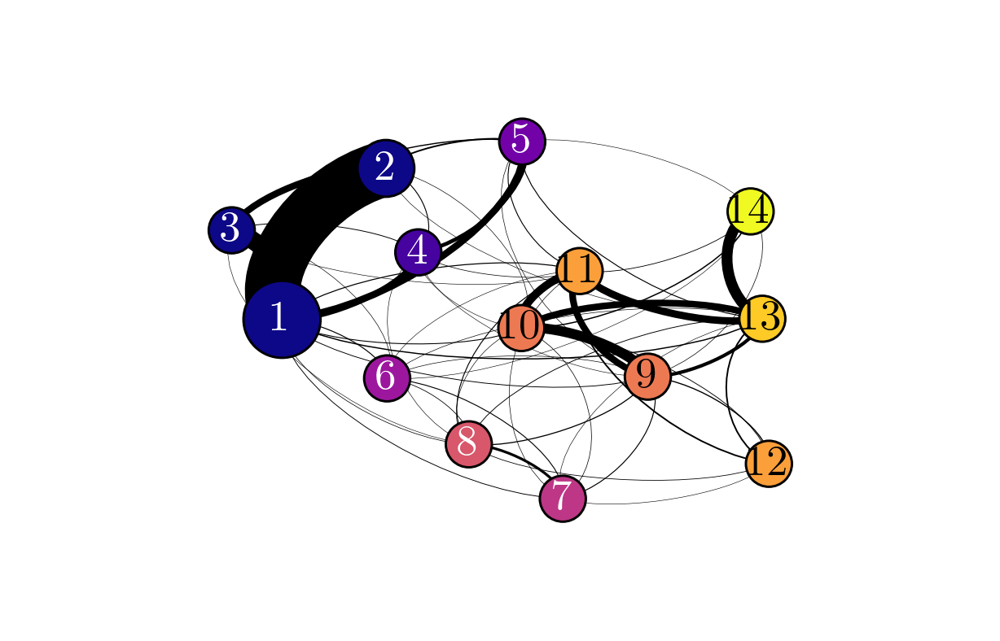
Transition Matrix¶
What it shows: The macrostate transition matrix as a heatmap with percentage labels. Off-diagonal entries use a logarithmic color scale (teal–yellow); diagonal self-transition probabilities use a separate linear color scale (white–red) on the right colorbar. Entries below a threshold are shown as white (gray background). The pattern of non-zero off-diagonal entries reveals which macrostates communicate directly at the chosen lag time.
CLI:
API:
Example (HP35, T none, 14 macrostates):
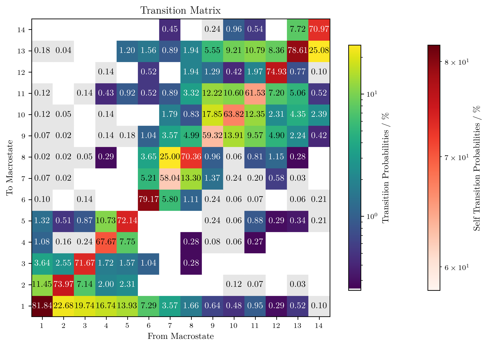
Transition Time¶
What it shows: Mean first-passage times \(t_\text{lag}/P_{ij}\) between macrostates in nanoseconds, displayed as a heatmap with numerical labels. The off-diagonal colorbar uses a log scale; the diagonal self-transition times use a separate linear scale. Gray cells indicate pairs with transition probability below the threshold. Short transition times between two macrostates indicate fast, frequent interconversion.
CLI:
API:
Example (HP35, T none, 14 macrostates):
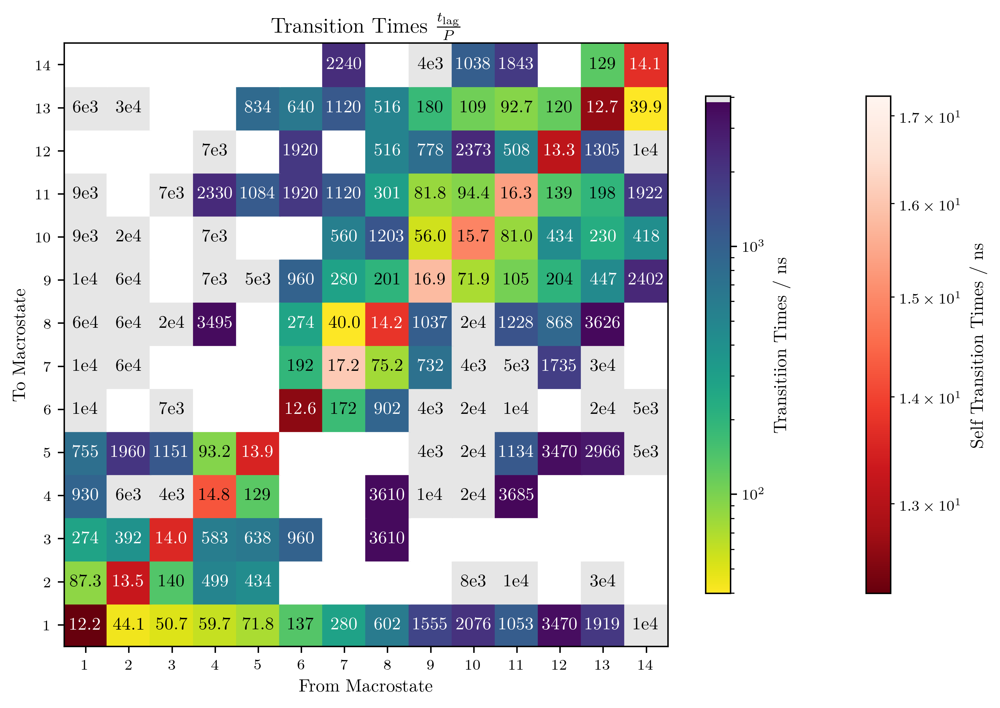
Macrostate Trajectory (text output)¶
What it produces: Not a plot — writes the macrostate trajectory as a plain-text file (one integer per line, 1-based macrostate indices).
CLI:
python -m MPP.run config.yml T none -Z Z.npy \
-p macrostate_trajectory -o macrostate_trajectory.txt
API:
Stochastic State Similarity¶
What it shows: For each macrostate of the reference T none lumping, a
histogram of similarity scores over all stochastic runs. Three overlap measures
are compared: lumping (fraction of the stochastic macrostate that matches the
reference state), reference (fraction of the reference state covered by the
stochastic macrostate), and union (Jaccard index). High similarity scores
concentrated near 1.0 for all measures indicate that the stochastic runs
consistently recover the same macrostates as the deterministic reference.
Only meaningful for n_runs > 1.
CLI:
python -m MPP.run config_stochastic.yml T none -Z Z.npy \
-p stochastic_state_similarity -o state_similarity.pdf
API:
Example (HP35, T none stochastic, 10 runs):
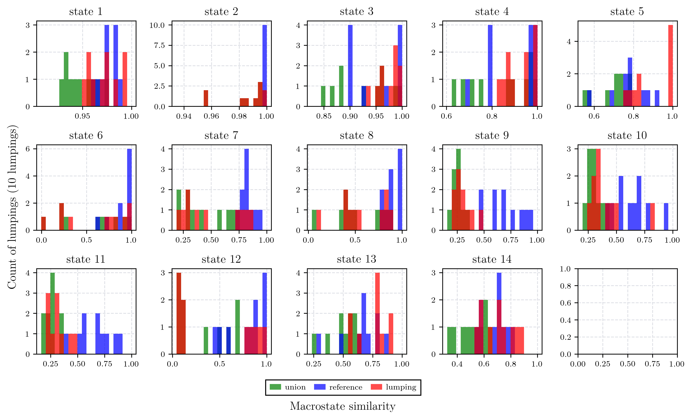
Relative Implied Timescales¶
What it shows: Three panels summarizing the distribution of implied timescales across stochastic runs relative to the deterministic reference lumping. The left panel shows the distribution of the slowest relative timescale \(t_\text{stoch} / t_\text{ref}\) for ITS 1; the middle panel shows the mean over all computed timescales; the right panel shows the distribution of macrostate counts across runs. Values close to 1.0 in the timescale panels indicate that the stochastic lumping preserves the slow dynamics of the reference.
Only meaningful for n_runs > 1.
CLI:
python -m MPP.run config_stochastic.yml T none -Z Z.npy \
-p relative_implied_timescales -o rel_timescales.pdf
API:
Example (HP35, T none stochastic, 10 runs):
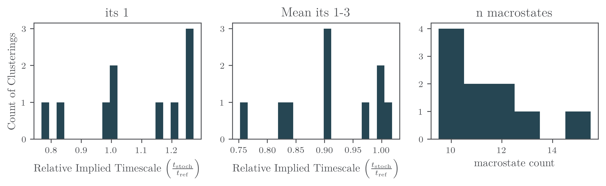
Macro Feature¶
What it shows: A histogram of the population-weighted mean feature value (fraction of native contacts) across all microstates assigned to each macrostate, pooled over all stochastic runs (dark bars). Red vertical lines mark the positions of the reference macrostate feature values (scaled by 1/1000 for visibility), with macrostate labels. The spread of each cluster of bars around the corresponding red line indicates how consistently the stochastic runs place the same microstates into each macrostate.
Only meaningful for n_runs > 1.
CLI:
API:
Example (HP35, T none stochastic, 10 runs):
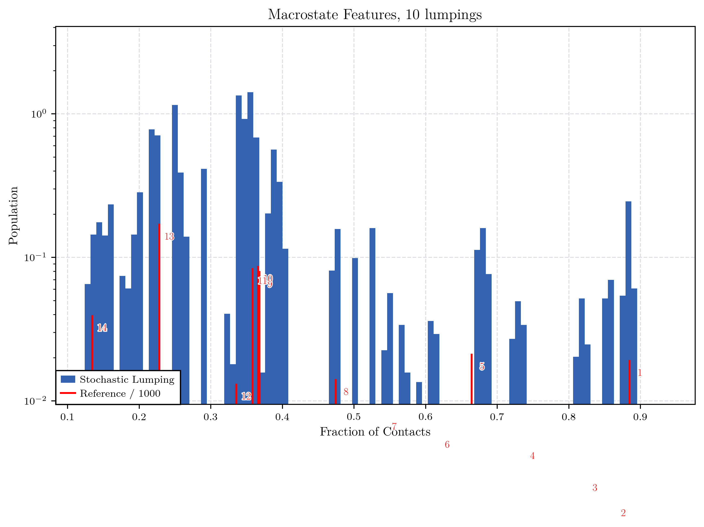